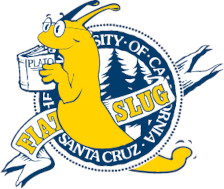

Sammy Slug

Beloved Mascot, Dept. of Electrical and Computer Engineering, UC Santa Cruz
Office: N/A
E-mail: sammy@ucsc.edu
Sammy celebrated 25 years as the official mascot of UC Santa Cruz in 2011. The Santa Cruz City Council declared Sept. 27, 2011, the official “Day of the UC Santa Cruz Banana Slug.”
My resume is available here.
Research
- Google Scholar Profile
- Research Article 1, S. Slug et al.. SlugCon 2023
- Research Article 2/a>, S. Slug et al.. American Journal of Slugs, 2021
News
I am seeking a cool internship in the Northern California redwoods.Projects
Selected Awards and Honors
- 2020 Best Slug
- 2019 Coolest Mascot Finalist